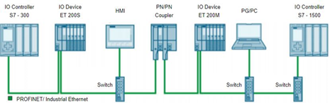
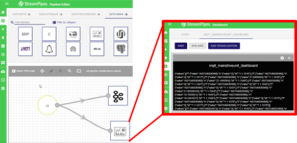
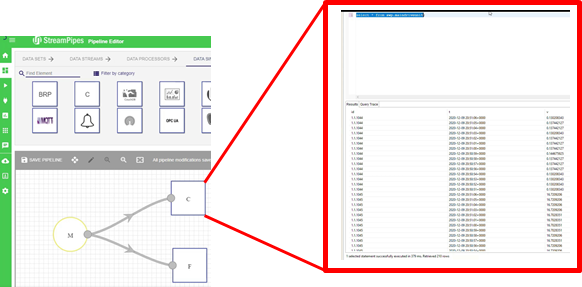

Steel 4.0 IoTP is a platform that is used to acquire, collect and store sensor and PLC data. The platform enables real-time stream processing as well as batch processing.
Steel 4.0 IoTP platform provides a drag-and-drop easy-to-use interface and enables none technical users to easily create stream pipeline elements and pipelines.
PLC data is collected by OPC and later via MQTT is passed to Kafka. Data in Kafka is consumed by Cassandra and PostgreSQL. The data are stored in the Cassandra database with three columns: id, time, and value. The id column shows the component to which the data belong. The JSON format streams of the data transferred to the Cassandra database are presented to users as a log file.
In the context of COGNITWIN, the IoTP output will be useful both in real-time condition monitoring and conducting the predictive maintenance.
A fully asynchronous communication structure with the event-bus method is used for the transmission of data collected from the source with OPC. Data transmission is provided in the JSON format. In the architecture managed on the basis of Microservice, Cassandra is used as the NoSQL database, and PostgreSQL, a relational database (RDBMS), is used by the interface program that provides user interaction.
PN/PN Coupler module is used for PLCs to communicate. Below figure presents coupling of the PROFINET subnets with the PN/PN Coupler:
Figure: Coupling of the PROFINET subnets with the PN/PN Coupler

Figure: PLC definition on OPC, and Sample Tag List Defined
The pipeline used by the platform to acquire and distribute sensor data from OPC to Kafka is presented as in the following Figure:
Figure: Pipeline for OPC -> MQTT -> Kafka in JSON
Figure: Pipeline to demonstrate Kafka data saved on to Cassandra database